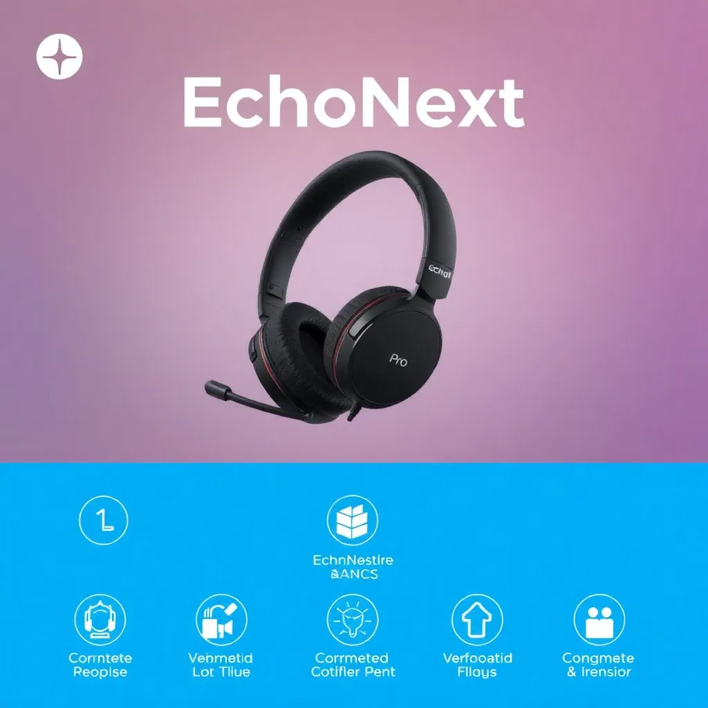
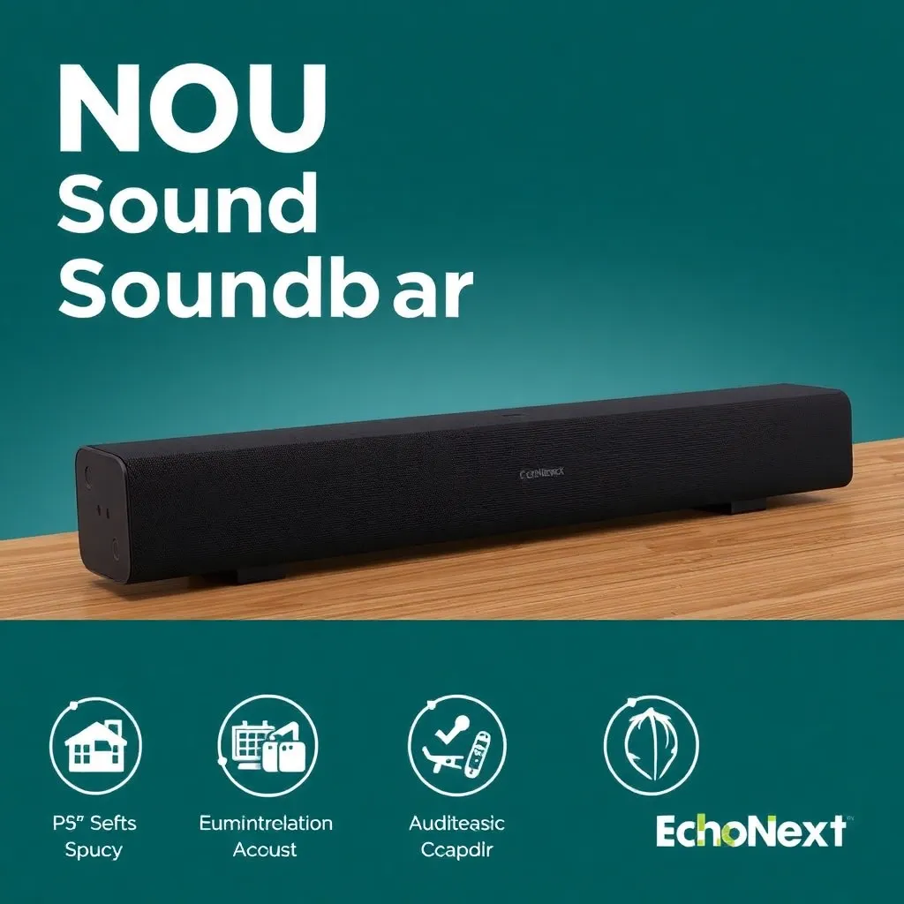
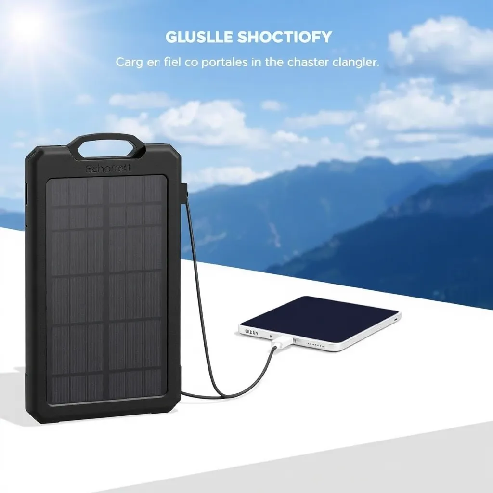
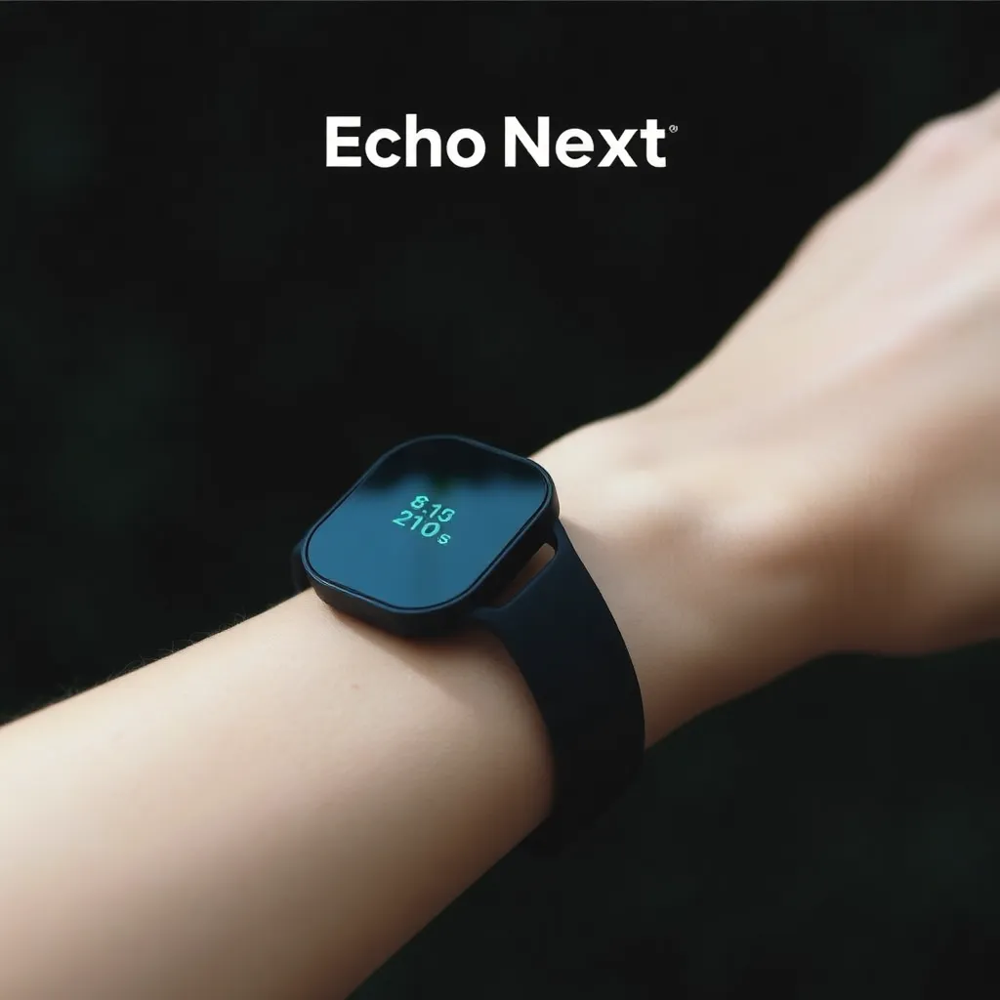

Nossos Produtos
EchoHeadset Eco
Desenvolvido com materiais 100% reciclados e som de alta definição.
EchoSound Pro
Caixa de som profissional que combina som excepcional e sustentabilidade

EchoNext Headset Pro
Cancelamento de ruído ativo, materiais sustentáveis e conforto premium.

EchoNext Soundbar Eco
Transforme seu entretenimento em casa com som premium e design ecológico.

EchoNext Portable Solar Charger
Carregador solar portátil, ideal para aventuras ao ar livre e sustentabilidade.

EchoNext Wearable Fitness Tracker
Rastreador de fitness sustentável que monitora sua saúde e atividades diárias.